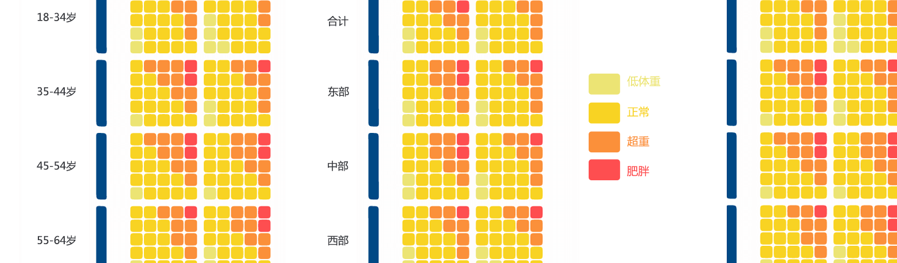
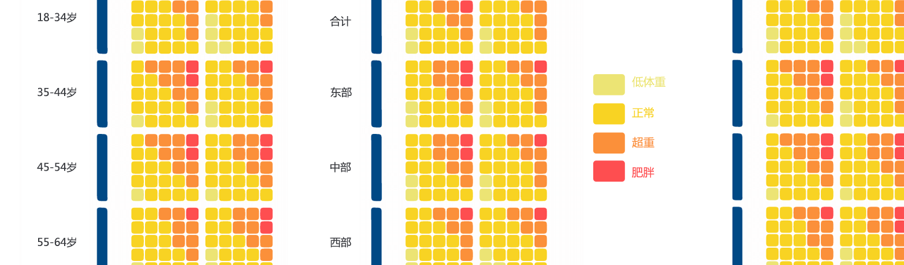

LIFELINE
慢性病信息科普，数据可视化与交互呈现该项目是本人本科毕业设计作品，和艺术同学合作完成 个人工作：参与数据搜集筛选分析、平台功能策划，利用Procssing/P5.js/D3.js编程实现数据可视化交互内容，并且完成全部网站和移动端H5页面的技术实现（XHTML/CSS/JavaScript），网站域名、服务器配置搭建。

点击进入网页：http://www.jnulifeline.com交互可视化内容在“信息图科”目录下

数据可视化项目｜互联网产品策划｜其他技术相关项目
该项目是本人本科毕业设计作品，和艺术同学合作完成 个人工作：参与数据搜集筛选分析、平台功能策划，利用Procssing/P5.js/D3.js编程实现数据可视化交互内容，并且完成全部网站和移动端H5页面的技术实现（XHTML/CSS/JavaScript），网站域名、服务器配置搭建。

点击进入网页：http://www.jnulifeline.com交互可视化内容在“信息图科”目录下